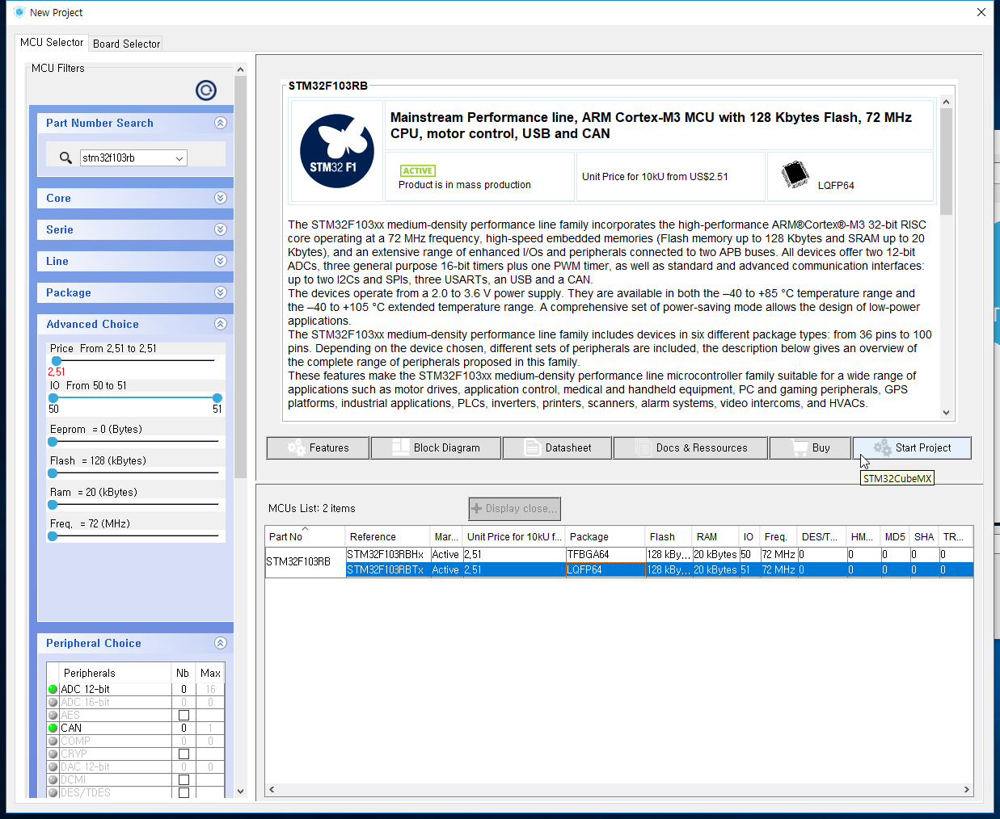

LED 켜고 끄기 - LED Blink
Digital OUTPUT을 이용하여 내장 LED를 On/Off해 보겠습니다.
STM32Cube
New Project를 눌러 새 프로젝트를 생성합니다.

Part Number Search에 stm32f103rb를 검색합니다.
Nucleo F103RB는 Package가 LQFP64칩이므로 아래것을 선택한 후 Start Project를 누릅니다.
왼쪽은 기능들의 상태를, 오른쪽에는 현재 핀의 상태를 나타냅니다.
PA5번이 내장 LED(LD2)에 연결되어 있으므로 이를 GPIO_Output 모드로 설정해 줍니다.
핀이 설정될 경우 아래와 같이 초록색으로 바뀌면서 핀의 고유한 이름이 나옵니다.
Configuration을 눌러 설정 창으로 이동합니다.
GPIO를 누르면 설정한 핀들이 나옵니다.
1개밖에 없으므로 이를 클릭한 후 User Label을 입력해 줍니다.
저는 internal_led로 해주었습니다.
Ok를 눌러 나온 후 Project-Generate Code를 클릭합니다.
혹은 Ctrl + Shift + G 를 입력하거나
왼쪽 위의 톱니바퀴 모양을 눌러도 됩니다.
Project Name과 Project Location을 입력하고 Toolchain / IDE를 MDK-ARM V5로 설정합니다.
설정이 완료되었으면 Ok를 누릅니다.
Open Project를 누릅니다.
uVision5가 실행되면서 STM32Cube에서 설정한 내용이 코드로 변환되어 올라옵니다.
uVision5
Application/User의 main.c에서 코딩을 해줍니다.
102번 줄(/ USER CODE BEGIN 3 /) 밑에 코드를 넣어주면 됩니다.
while문으로 감싸져 있어 무한 반복하게 됩니다.
97~108번줄
/* USER CODE BEGIN WHILE */
while (1)
{
/* USER CODE END WHILE */
/* USER CODE BEGIN 3 */
HAL_GPIO_WritePin(internal_led_GPIO_Port, internal_led_Pin, GPIO_PIN_SET);
HAL_Delay(500) ;
HAL_GPIO_WritePin(internal_led_GPIO_Port, internal_led_Pin, GPIO_PIN_RESET);
HAL_Delay(500) ;
}
/* USER CODE END 3 */
완료되었으면 보드를 연결한 후 F7(Build) - F8(Download)를 눌러줍니다.
아래와 같이 나오면 완료된 것입니다.
보드의 검은색 버튼(RESET)을 눌러주면 초록색 LED가 0.5초 간격으로 점멸하는 것을 확인할 수 있습니다.